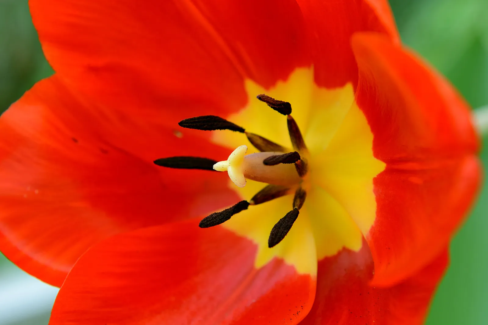
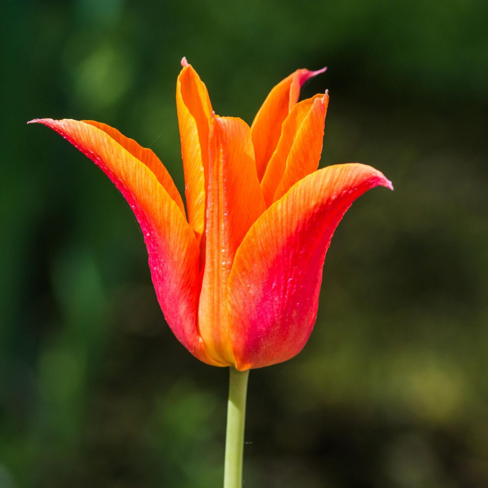

What do we do?

In the summer of 2021, John Petal made something special. After months of hard work, he had successfully created the service of his dreams—a distribution platform for flowers.
PETAL makes it easy to identify and purchase any flower in the world; by describing it.
About Us

John Petal has always been a fanatic about flowers. At a young age, his grand aunt gave him his first tulip—his most cherished posession. He nurtured it, and took care of it for the 4 years that it lived. At a young age, Petal had already understood the weight of life and the importance of our ecosystem. He wants to share his love of floriculture to the world, and PETAL is his way of saying "thank you".